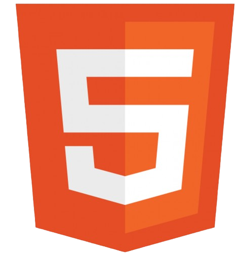

Hi Everyone, I am [Mubashir Khan] from [Karachi], [Pakistan].
I recently completed my [Intermediate] from [Govt. College ForMen].
Additionally, I’ve gained hands-on experience in Frontend Development,
mastering
HTML, CSS, and JavaScript to create responsive and
interactive
web designs.
Currently, I’m exploring advanced web technologies and sharpening my skills
further. My goal is to
continuously grow as a developer and contribute
to impactful projects.
In the future, I aim to learn backend technologies and move towards becoming a
Full-Stack Developer,
capable of building end-to-end web applications.
I am open to internship opportunities where I can utilize my existing skills
while learning and
growing in a professional environment.